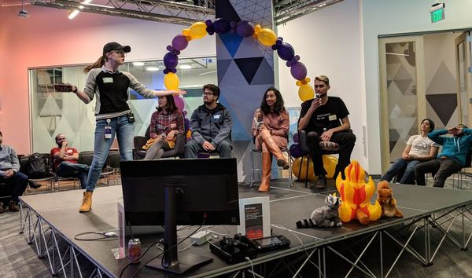
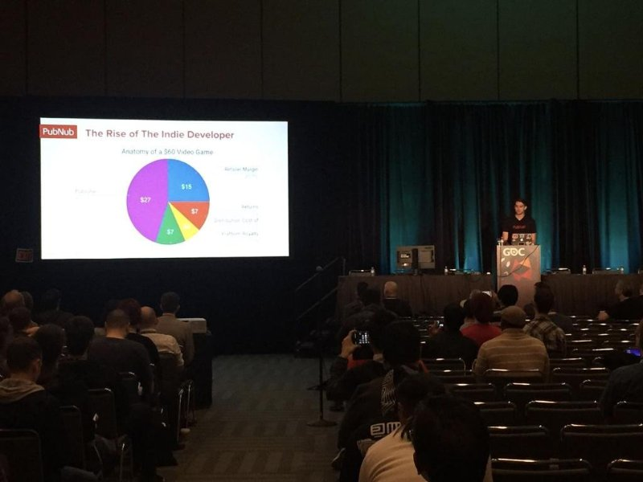

Arion Arias
I am a Business Administration student at the University of California, Riverside, passionate about leveraging technology, strategic analysis, and modern organizational management to solve complex real-world business challenges. Through my academic journey, I have developed a deep understanding of core business disciplines including financial analysis, operational management, corporate strategy, and digital communication.
My technical background includes working with web development frameworks, database concepts, data-driven decision making, and collaborating on digital projects. I am dedicated to continuous professional learning, effective communication within cross-functional teams, and building scalable business solutions that drive meaningful organizational growth.
Outside the classroom, I actively participate in team projects, leadership development workshops, and community events aimed at applying analytical principles to practical scenarios. I aim to contribute my analytical mindset and business acumen to dynamic corporate environments.
Experience
Business Analyst Intern
• Conducted market analysis and gathered business requirements for dynamic team initiatives.
• Created data reports and presented strategic recommendations to project leads.
• Collaborated across student groups to streamline operational workflows.
Project Coordinator
• Organized workshops, professional networking events, and career panels for undergraduate students.
• Managed digital communications and promoted campus involvement across various social platforms.
• Assisted in tracking budget allocations and event metrics.
Student Assistant
• Provided administrative and logistical support across university department operations.
• Managed file organization, customer service inquiries, and student inquiries efficiently.
• Maintained accurate internal records using office database software.
Education
UC Riverside
Portfolio

